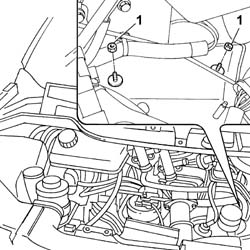
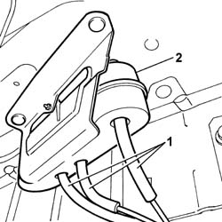

1080C60 EGR SYSTEM VACUUM TANK - R R
- Path
- Procedures > 10 ENGINE > 1080 EXHAUST EMISSION CONTROL SYSTEM > 1080C EXHAUST GAS RECIRCULATION SYSTEM (E.G.R.) > 1080C60 EGR SYSTEM VACUUM TANK - R R
- Kind
- repair procedure (removal / refitting; the operation number is the code)
- Applies to
- engines: 2.2 16V JTD; all production periods
- Interactive page
- https://sloeber94.github.io/elrnDB-fUlss/en/#/179007127
Applies to: engines: 2.2 16V JTD; all production periods
 Removing
Removing
 Refitting
Refitting1. Undo the reservoir retaining nuts.

Applies to: engines: 2.2 16V JTD; all production periods
Op. 4450B02 LEFT FRONT WHEEL R R
Op. 7055B90 LEFT FRONT WHEEL ARCH LINER - R.R.
1. Disconnect the vacuum pipes.
2. Remove the vacuum reservoir.

Applies to: engines: 2.2 16V JTD; all production periods
Refitting
Removing- Place the reservoir in position and tighten the fixing nuts.
- Connect the vacuum pipes to the reservoir.